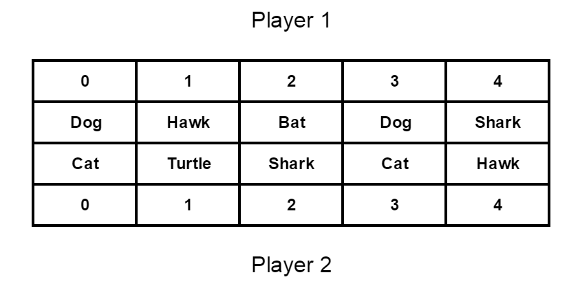

Submission deadline: 11:59pm, Saturday, Nov. 21, 2015
takeDamage and die functions to virtual functions to help you implement the bonus part. However, it is not recommended to change those if you are not going to work on the bonus part.
Dragon Dead Dead Dead Dead
Dead Dead Dead Dead Dragon
But if you want to handle it nicely, you may make it a draw condition.
In this assignment you will design the game "Animal War" based on your OOP knowledge on inheritance and polymorphism, and simulate the game given an input.
Animal Wars is a turn-based game consisting of 2 players. At the beginning of the game, each of the two players P1 and P2 starts with 5 animals with positions labelled from i = 0 to 4.
Fig 1:
Upon object instantiation, all the position information of the animal, its allies and enemies will be injected into the object for you to implement the more complicated game logics described later. The constructor of the class Animal (the base class of all other animal classes):
Animal::Animal(Game* game, int player, int position) {
allies = game->animals[player];
enemies = game->animals[!player];
pos = position;
is_dead = false;
}
All animals have the following attributes:
hp: an integer value
that determines how many damage points the animal can take before it
diesatk_damage: an integral point of the
damage dealt (incurred) on its attacking opponentFurthermore, all the animals MUST have the following behaviours:
attack: deal (incur) damage to an
enemy/enemies on the opposite side, if the damage dealt is larger than
the opponent's current HP, the opponent dies.defend:
alter the final damage dealt on oneself, or respond to the attacker
according to its defensive skilltakeDamage:
Deduct HP according to a "damage value" defined by the
animal's defend
behaviourdie,
can no longer attack or become a target of the enemies' attacksIf you take a look at the Animal.h file in the provided skeleton code, the declarations of the Animal's behaviours look like this:
virtual void attack() = 0;
virtual void defend(Animal* opponent, int damage);
void takeDamage(int damage);
void die();
Since different animals should behave differently when attack and defend, you should override these 2 methods in the derived classes to implement the specific behaviour of each animal.
However, the takeDamage and die behaviour should be THE SAME FOR ALL ANIMALS.
You may use these 2 methods in your implementation of the attack and defend behaviours of other animals,
but you should not override takeDamage and die in the derived classes.
An animal will attack the enemy of the same position index on the other side, and it will attack whoever else closest to it if the opposite enemy is dead, break ties by choosing an enemy with the smallest position index. The distance between 2 animals is defined as the absolute value of the difference of their position index.
Using the Fig.1 above as an example, Shark of Player 2 (at position 2) should attack:
Unless otherwise stated, the above Position Rule applies to all animals.
attack behaviour:
// Attack according to the Position Rule.
// Note that the enemy's defend method is passively called in the attacker's attack method.
void Dog::attack()
{
if(!enemies[pos]->isDead())
enemies[pos]->defend(this, atk_damage);
else {
for(int i = 1; i < 5; i++)
{
if(pos-i >= 0 && !enemies[pos-i]->isDead())
{
enemies[pos-i]->defend(this, atk_damage);
break;
}
else if(pos+i < 5 && !enemies[pos+i]->isDead())
{
enemies[pos+i]->defend(this, atk_damage);
break;
}
}
}
}
defend behaviour (inherited from the base class Animal):
// Defend the damage from an opponent
void Animal::defend(Animal* opponent, int damage)
{
takeDamage(damage);
}
takeDamage behaviour (inherited from the base class Animal):
void Animal::takeDamage(int damage)
{
hp -= damage;
if( hp <= 0 )
die();
}
die behaviour (inherited from the base class Animal):
void Animal::die()
{
is_dead = true;
}
When the game starts, P1 and P2 will take turns to attack (Player 1 always starts first in this game). When a player is attacking, the other one will be defending. During a player's attacking turn, all of his animals who are still alive will attack in ascending order of their position index. If the game does not end in a turn, it will proceed to the next turn where the attacking player will become the defending player, and vice versa. The game ends when either one or both sides are all dead.
The input is a single line with 10 integers. The first 5 integers correspond to the animal IDs(listed in the next section) of the 5 animals from position 0 to 4 in Player 1's team. The last 5 integers correspond to the animal IDs of the 5 animals from position 0 to 4 in Player 2's team
For example, the input corresponding to Fig.1 above is: (You should check the animal IDs in the next section)
0 2 3 0 5 1 4 5 1 2The program should simulate the HP of all animals at the end of the each turn, output "DEAD" if an animal is dead (HP <= 0). When the game ends, it should output the winner as "Player X Wins!", or output "Draw!" if both sides are dead at the end of the game (Please refer to the next section to see how can a "draw" happen).
For example, the expected output corresponding to Fig.1 is:
Turn 1 Player 1 attacks:
Player 1
Dog:30 Hawk:25 Bat:19 Dog:30 Shark:28
Player 2
Cat:20 Turtle:30 Shark:26 Cat:20 Hawk:21
Turn 2 Player 2 attacks:
Player 1
Dog:24 Hawk:24 Bat:14 Dog:24 Shark:23
Player 2
Cat:20 Turtle:29 Shark:25 Cat:20 Hawk:21
Turn 3 Player 1 attacks:
Player 1
Dog:24 Hawk:24 Bat:13 Dog:24 Shark:21
Player 2
Cat:15 Turtle:24 Shark:21 Cat:15 Hawk:17
Turn 4 Player 2 attacks:
Player 1
Dog:18 Hawk:23 Bat:8 Dog:18 Shark:16
Player 2
Cat:15 Turtle:23 Shark:20 Cat:15 Hawk:17
Turn 5 Player 1 attacks:
Player 1
Dog:18 Hawk:23 Bat:7 Dog:18 Shark:14
Player 2
Cat:10 Turtle:18 Shark:16 Cat:10 Hawk:13
Turn 6 Player 2 attacks:
Player 1
Dog:9 Hawk:22 Bat:2 Dog:9 Shark:9
Player 2
Cat:10 Turtle:17 Shark:15 Cat:10 Hawk:13
Turn 7 Player 1 attacks:
Player 1
Dog:9 Hawk:22 Bat:DEAD Dog:9 Shark:7
Player 2
Cat:5 Turtle:12 Shark:11 Cat:5 Hawk:9
Turn 8 Player 2 attacks:
Player 1
Dog:DEAD Hawk:17 Bat:DEAD Dog:DEAD Shark:2
Player 2
Cat:5 Turtle:11 Shark:9 Cat:5 Hawk:9
Turn 9 Player 1 attacks:
Player 1
Dog:DEAD Hawk:17 Bat:DEAD Dog:DEAD Shark:DEAD
Player 2
Cat:5 Turtle:6 Shark:9 Cat:5 Hawk:5
Turn 10 Player 2 attacks:
Player 1
Dog:DEAD Hawk:DEAD Bat:DEAD Dog:DEAD Shark:DEAD
Player 2
Cat:4 Turtle:5 Shark:7 Cat:5 Hawk:5
Player 2 Wins!
Details of this output will be explained in the next section.
Different animals have different HP and attack damage, and they should attack and defend differently according to their nature.
In this assignment, you will need to design the classes and inheritance relations of the animals according to the following information:
| ID | Name | Max HP | Damage | Attack | Defend |
| 0 | Dog | 30 | 5 | Deals damages normally | Takes damages normally |
| 1 | Cat | 25 | 6 | Cats go crazy while in danger. Deals 1.5 times damages when HP < 13 | Takes damages normally |
| 2 | Hawk | 25 | 5 | Attacks with great accuracy! Hawk's attacks are indefensible1 | Takes only 70% of the damages and revenges2 and deals 1 indefensible damage back as hawks are extremely agile |
| 3 | Bat | 20 | 4 | Drains3 its enemy's HP and heals itself for 1 HP | Takes only 80% of the damages as flying animals are agile |
| 4 | Turtle | 35 | 2 | Deals damages normally | With a hard shell, turtle only takes 50% of the damages |
| 5 | Shark | 30 | 7 | Attacks recklessly, sharks will also hurt themselves by 1 HP in each attack4 | Revenges fiercely and deals 2 indefensible damages to whoever attacks it |
| 6 | Army Ant | 15 | 1 | Deals damages normally | Takes damages normally |
| 7 | Army Ant(Queen)5 | 15 | 0 | Queens does not attack, hence will not trigger opponent's defensive skill as well | Other alive ants of the same team will revenge and each of them deal 2 indefensible damages to whoever attacks the queen |
| 8 | Dragon | 40 | 4 | Fire breathes in a cone, dealing damages to the 3 closest positions on the opposite side, regardless the enemies there are dead or alive. (i.e. Position Rule does not apply). If the dragon is positioned at the boundary, index 0 or 4, then it will only attack 0,1 or 3,4 on the opposite side respectively. | Takes only 80% of the damages as flying animals are agile |
*Notes:
Turn 1 Player 1 attacks: // Player 1's Hawk attacks in this turn, dealing 5 damages to Turtle instead of 2
Player 1
Dog:30 Hawk:25 Bat:19 Dog:30 Shark:28
Player 2
Cat:20 Turtle:30 Shark:26 Cat:20 Hawk:21
Turn 2 Player 2 attacks: // Player 2's Hawk attacks Shark in this turn, and it is not revenged by the Shark
Player 1
Dog:24 Hawk:24 Bat:14 Dog:24 Shark:23
Player 2
Cat:20 Turtle:29 Shark:25 Cat:20 Hawk:21
defend behaviour, so the correct sequence will be: Bat attacks->enemy defends and takes damages->enemy revenges(if any)->Bat heals itself. Also note that Bats do not "over heal" themselves, their HP cannot exceed the Max HP after the healing.
For example, the Turn 1 and Turn 7 of the Fig.1 testcase:
// Bat attacks Shark-> Shark revenges for 2 damages-> Bat heals itself for 1 HP = 19HP at the end of turn 1
Turn 1 Player 1 attacks:
Player 1
Dog:30 Hawk:25 Bat:19 Dog:30 Shark:28
Player 2
Cat:20 Turtle:30 Shark:26 Cat:20 Hawk:21
Turn 6 Player 2 attacks:
Player 1
Dog:9 Hawk:22 Bat:2 Dog:9 Shark:9
Player 2
Cat:10 Turtle:17 Shark:15 Cat:10 Hawk:13
// Bat starts with 2 HP and attacks Shark-> Shark revenges for 2 damages ->Bat dies, cannot heal itself
Turn 7 Player 1 attacks:
Player 1
Dog:9 Hawk:22 Bat:DEAD Dog:9 Shark:7
Player 2
Cat:5 Turtle:12 Shark:11 Cat:5 Hawk:9
For each of the animals listed above, complete the corresponding class header and .cpp file. Implement necessary functions as described in the above table.
After you have implemented them, remember to include the header files in the Game.cpp and instantiate the animal in the Game::load() function.
You may refer to the Dog.h and Dog.cpp files as an example.
To make the game more interesting, several combinations of animals can make some special moves:
harass the opponents and each of them deals 1
indefensible damage to all enemies in their attacking turnharassharass with fire breaths, dealing 2 indefensible damages to
all enemies insteadsummonTsunami and each of them deals 1
indefensible damage to all enemies in their attacking turnmarchAndConquer
whatever in front of them, each of them deals 3 indefensible damages to all enemies
in their attacking turnImplement these 3 special moves for the corresponding animals. After you finished, simulate the effect of these special moves in the
Game::start() function. The special moves should be simulated after the normal attacks in each round. (See the instructions in the skeleton code, which clearly stated where should you put your codes.)
Game class to help you complete the required logics.
0 0 0 0 0 0 0 0 0 0" (10 dogs, 5 on each team) to help you get a basic idea of the game play.
Game::start() method. In each
turn, the program will output the remaining HP of the animals on each
side. The game will proceed until either one or both sides are all
dead. When the game ends, the program output the winner. These are
already done by the skeleton code. Your task is to add the special
moves of the animal combinations as described in the above section in
the simulation. You may add any necessary data members to help in the
Game.h file. Note that we will
use our own testing program to grade your program. Therefore, please
follow the I/O of the functions because we will use a different program
to test your implementation.